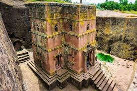
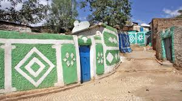

|
Gonder
|
 |
In 1632, King Fasilidas proclaimed that Gondar, a previously obscure village, would become the site of the Empire’s new capital. The population consequently swelled to over 60,000 and for the next 250 years, the Kings of Ethiopia ruled from Gondar. Beginning with Fasilidas, a succession of Ethiopian kings built the castles that still occupy the heart of modern day Gondar. Known collectively as the Royal Enclosure or
“Fasil Ghebbi”, the castles have survived several wars.
|
|
Axum
|  |
The early history of Ethiopia (also called Abyssinia) begins with the glorious but little-known kingdom of Axum (Aksum). The origins of the Axumite state date back to the middle of the 2nd century BC. At the height of its power, between the 4th and 7th centuries AD, the Axumite kingdom controlled most of present-day Ethiopia, including territories in the southern parts of the Arabian Peninsula. The Axumite rulers were in regular diplomatic and commercial contact with the Egyptian, Greek, Byzantine, and Persian empires. The achievements of this grand culture are recorded today in the ruins of its cities, reservoirs, temples, and, most remarkably.
|
|
stone |
 |
Ancient Stone Inscriptions or Stelae from the Afar region
The Afar Triangle has archaeological sites with:
Stone tools (Oldowan, Acheulean) going back over 2 million years
Various stone structures and inscriptions from ancient Ethiopian cultures
Nearby ancient kingdoms (like Aksum) used stone stelae as official records.
|
|
lalibela |
 |
The Rock-Hewn Churches of Lalibela, Ethiopia
Hidden for centuries in the remote highlands, about 700 kilometers north of Addis Ababa, the magnificent
rock-hewn churches of Lalibela are not to be missed by today’s visitors. This group of eleven monolithic
and semi-monolithic structures was carved directly into the stone of the mountainside at least 800 years
ago.
|
| Selassie church |
 |
✅ A. Holy Trinity Cathedral (Addis Ababa)
The most famous “Selassie” church in Ethiopia
Built in the early 20th century
Burial place of Emperor Haile Selassie and Empress Menen
Known for its stained-glass windows and imperial architecture
One of the highest-ranking Orthodox churches (after Lalibela) |
| Ethio-Harar |
 |
Harar, with its 16th century walled “old city” of Jugal, is quite distinct from Ethiopia’s other historical sites with their strong connections to Orthodox Christianity. While Christianity was introduced and accepted by the nation of Ethiopia very early, Islam also arrived at the outskirts of the Ethiopian Empire not long after Mohammed began spreading his faith on the nearby Arabian Peninsula. At one time, non-Muslims were
forbidden from the old city, |